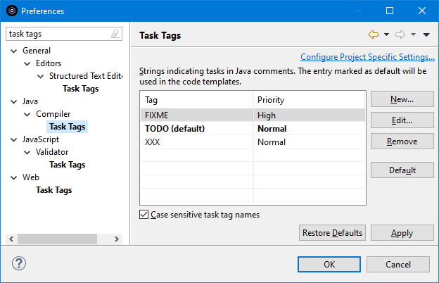
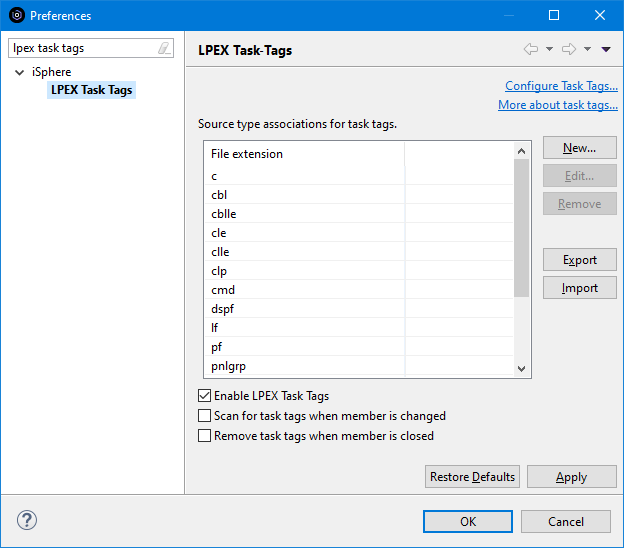

| Notice: The 'Case sensitive task tag names' checkbox is ignored for LPEX task tags. |
This page is also available from the LPEX Task-Tags Preferences page.

The available options are:
| Enable Lpex Task Tags | - | Specifies whether task tags are enabled for the file extensions shown in the table at all. |
| Scan for task tags when member is changed | - | Specifies whether to scan the source member for task tags whenever the content is changed. |
| Remove task tags when member is closed | - | Specifies whether task tags are removed from the Tasks view, when the source member is closed. When this option is disabled, the task task stay in the Tasks view, so that the source member can be opened by double-clicking the task. |